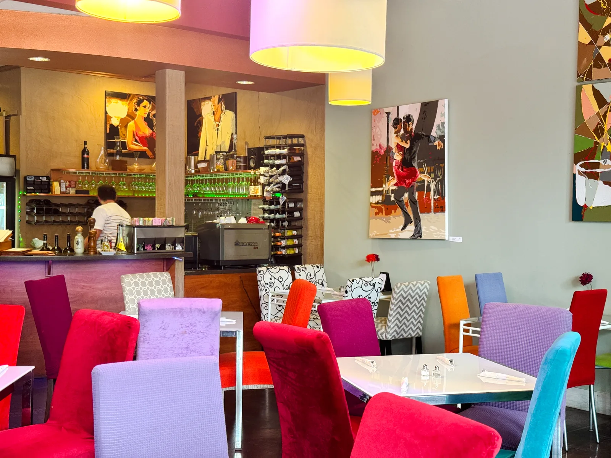

Our story.
A family-owned Italian café shaped by the people who gather here—and the artist who fills its walls.



An Austin original, through and through.
Milano Café opened its doors in April 2009 with a simple idea: create a welcoming place for Italian food and shared experiences.
Today, the family-owned café is part dining room, part personal gallery. A collection of expressive paintings gives every corner its own character, making each visit feel familiar and full of surprises.
It’s a place to come together over good food—and to linger over the details.
A café can be more than a place to eat. It can be a place to feel at home.
An invitation to gather
Made with imagination.
The café’s owner is also the artist behind most of the paintings you’ll see on our walls. The work adds personality to the space, with pieces available to inquire about while you dine.
Occasionally, works by other artists make their way onto the walls as well. The result is a living collection that reflects the people behind this place.
Explore the artwork